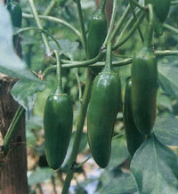
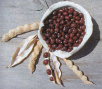
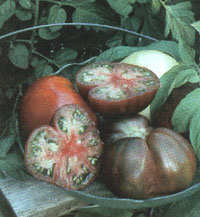
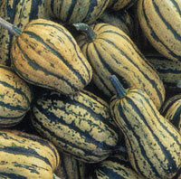

Garden & Yard
Fabulous flavor is one of the best reasons to grow your own food, yet many of the best varieties are becoming hard to find. Our modern food system often values shelf life, shipping qualities, yield and uniformity more than taste and tenderness. As a result, tough new hybrids are displacing full-flavored varieties. More and more people are unaware of just how great vegetables can taste. Too many supermarket offerings-tomatoes, strawberries and green beans come to mind-are now so tough and tasteless they're often hardly worth eating.
This new Cream of the Crops series highlights outstanding, great-tasting varieties recommended by expert gardeners. To kick things off, we asked MOTHER'S green-thumbed editors and contributors to nominate their favorites. Here are four of them:
'SINAHUISA' HOT PEPPER
Similar in size and shape to serrano chiles, 'Sinahuisa' is a thick-fleshed, juicy pepper with moderate heat that lets its underlying flavor come through. Picked green, 'Sinahuisa' has a sweet, earthy flavor with a delayed pungency; it's more like a bell pepper with an attitude than a chile. Eaten raw, the basic pepper taste dominates until the heat comes through as an afterthought. Like other hot peppers, much of the heat is in the ribs and seeds. Picked ripe, the heat comes through much stronger, scoring between 10,000 and 20,000 Scoville Heat Units (a measurement for peppers' heat), as compared to jalapeno s 2,500 to 10,000 SHUs.
A prolific, quick-maturing pepper that lends itself to container gardening, this pepper's numerous, 3/4-inch-thick and 1 1/2- to 2-inches-long, waxy green and bright red fruits resemble Christmas ornaments. Useful wherever a moderate chile is needed, 'Sinahuisa' is especially good pickled. The green peppers make a fruity hot sauce, while the ripe ones make a superlative red sauce similar to Tabasco. `Sinahuisa' is my favored variety for fresh salsa, particularly fruit salsa.
'Sinahuisa' was collected from a Yoeme weaver at a mayo ejido (communal farm) in Sonora, Mexico. I first heard about them from Sharon Vadas, in Colorado, who sent me seed, and I've been growing them every year since.
Seed is available from Native Seeds/SEARCH: (520) 622-5561 or www.nativeseeds.org .
BROOK ELLIOTT
Contributing Editor
'TRUE CRANBERRY' DRY BEAN
These unique, round, black-red beans look almost like cranberries. The dried beans cook down to very tender-skinned beans with a rich, meaty flavor and creamy texture. 'True Cranberry' was a traditional choice in New England for baked beans, and it also makes an excellent soup bean. Early maturing (95 days in Vermont), this variety can produce 50 pounds of dried beans from a 100-foot double row.
I discovered this delicious, dry pole bean when searching for heirloom varieties to include in a display at the Philadelphia Flower Show. We wanted to show the diversity in beans beyond kidney, pinto and navy beans, and 'True Cranberry' was the most distinctive bean we found.
Perhaps no other bean is as intricately entwined with American history as the
'True' or 'Red Cranberry.' It was known here prior to 1670, and, according to William Woys Weaver, might be the red bean referred to in Lescarbot's 1612 account of New France.
'True Cranberry' is still available thanks to the efforts of 20th century bean collector John Withee, who saved it from extinction. After reading a description of it in a 1700s gardening encyclopedia, he spent 11 years searching for it.
Seed is available from Abundant Life Seed Foundation: (360) 385-5660 or www.abundantlifeseed.org and High Mowing Seeds: (802) 888-1800 or www.highmowingseeds.com .
CHERYL LONG
Editor in Chief
SOUTHERN NIGHTS' BLACK TOMATO'
Any homegrown tomato is far superior to those found in grocery stores. But even among homegrown types, 'Southern Nights,' a Russian variety, stands apart.
This "black" tomato has firm. dark purple flesh with an appealing juiciness. Similar in taste and appearance to the highly touted 'Black Krim,' 'Southern Nights' has a distinct grape essence without the saltiness of 'Black Krim,' There is an exquisite acid-sweet balance of flavors, with a wide palate of undertones. The nuances of flavor found in 'Southern Nights' can be likened to those found in fine wines.
'Southern Nights' is a potato-leaf plant that is very productive in hot, humid southern climates. Its large leaves shade developing fruit to prevent sun scorch, and its determinate habit of setting fruit in one big batch allows for large crops to be set in the small window of opportunity when night temperatures are between 50 degrees and 78 degrees.
'Southern Nights' is named for the Crimea region's steppes and their famous pitch-black night skies, unsullied by city light pollution. With the help of the Vavilov Institute in St. Petersburg, Kent Whealy, of Seed Savers Exchange, found the seeds and brought them to North America.
Seed is available from Baker Creek Heirloom Seeds: (417) 924-8917 or www.rareseeds.com ; Marianna's Heirloom Seeds: (615) 446-9191 or www.mariseeds.com ; and Tomato Growers Supply: (888) 478-7333 or www.tomatogrowers.com .
DOREEN HOWARD
Contributing Writer
' SUGAR LOAF' WINTER SQUASH
This is by far the sweetest -inter squash yet developed. Baked. it seems almost candied, as though cooked down with lots of brown sugar or honey. Kids who normally hate winter squash gobble this one up like dessert.
Developed in 1990 by plant breeder Dr. James R. Baggett of Oregon State University, 'Sugar Loaf is far superior to its close relatives 'Delicata' and 'Sweet Meat.' Highly productive vines produce blocky, uniform fruits about 6 inches long, making half a squash a perfect serving.
Although sometimes listed in catalogs as a good keeper, its high sugar content renders 'Sugar Loaf a rather poor keeper. especially - hen kept in warmer temperatures, so the harvest should be used during the first half of winter.
Seed is available from Nichols Garden Nursery: (800) 422-3985 or www.nicholsgardennursery.com and West Coast Seeds: (604) 952-8820 or www.westcoastseeds.com .
DAVID CAVAGNARO
Contributing Photographer
To nominate your favorite greattasting variety, contact Brook Elliott at Box 519; Richmond, KY 40476; or BrookBarb@aol.com for details.
|
 BARBRO FOTO 'Sinahuisa' hot pepper |
 MATTHEW STALLBAUMER 'True Cranberry' dry bean |
 DOREEN HOWARD 'Southern Nights' black tomato |
|
 DAVID CAVAGNARO 'Sugar Loaf' winter squash |
|
|